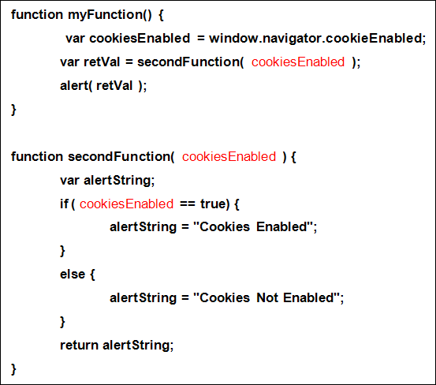
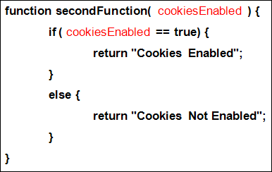
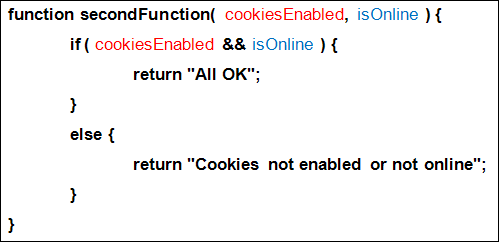
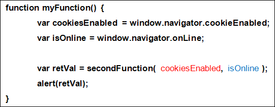

Function Arguments in Javascript
You can pass values over to your functions. These values are called arguments, and they go between the round brackets of the function. If you have more than one value to pass over, you separated them with commas. Let's look at an example.
Here's some new code to study that illustrates the use of arguments:

In myFunction, we've set up a variable called cookiesEnabled:
var cookiesEnabled = window.navigator.cookieEnabled;
We want to test whether a user has cookies enabled in the browser. The second line of our code is this:
var retVal = secondFunction( cookiesEnabled );
In between the round brackets of our function call, we have typed the cookiesEnabled variable. This will either be true or false, depending on the user's settings. By typing a variable name between the round brackets of the function call we have set up an argument (you can also type values such as 10, "ten", or true.) The value of the cookiesEnabled variable will then handed over to the secondFunction. But look at how the secondFunction is now laid out:
function secondFunction( cookiesEnabled ) {
The second function also has a variable name between its round brackets, the same one as myFunction. But It doesn't have to be the same name. You can have different names if you like. For example:
var retVal = secondFunction( cookiesEnabled );
function secondFunction( cookiesEnabled_two ) {
The result is the same: whatever was in the variable from the calling function will be passed over to the function being called.
You could even do this:
var retVal = secondFunction( true );
function secondFunction( cookiesEnabled ) {
The function call now has a hard-coded value of true between the round brackets. A value of true will then be placed in the cookiesEnabled variable.
The code for the secondFunction just uses an IF statement to check if cookiesEnabled is true or false. It then returns a string value. We could even simplify our code like this:

This time, we've gotten rid of the alertString variable. Instead, we have two uses of return: one for the if part, and one for the else part. The return keyword is like a "stop" message to Javascript. After it executes a return line it bails out of the function. Any code after it won't get executed.
You can pass more than one value over to your functions. In the code below, we've set up secondFunction to have two arguments between the round brackets:

Note that the two arguments are separated by commas. When we want to call this function we can use both arguments:

We're passing over our two arguments with this:
var retVal = secondFunction( cookiesEnabled, isOnline );
Whatever is in these two variables will be passed to the two variables in the secondFunction.
In Javascript, however, you don't need to pass over the same number of arguments. This, for example, is perfectly valid:
var retVal = secondFunction( cookiesEnabled );
Here, we're only passing over one of the two values that secondFunction has set up. Javascript, unlike other programming languages, won't give you any error messages if the number of arguments don't agree. You could even miss out both arguments between the round brackets and Javascript won't complain. So this is OK as well (but fairly pointless):
var retVal = secondFunction();
In the code we have set up for secondFunction, the else part will be executed. In practice, though, you'd want the number of arguments to match. So if a second function is accepting two arguments then the calling line should pass over two values. It can be terribly confusing otherwise.
In the next part, you'll about something called variable scope, and hope it applies to functions.